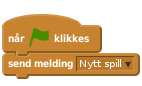
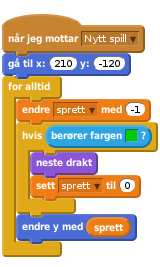
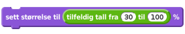
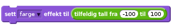
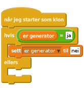

Scratch
Hoppehelt
Hoppehelt er litt inspirert av musikkspillet Guitar Hero. I Hoppehelt skal man kontrollere flere helter samtidig mens de hopper over fargede bokser som lager lyd.
Gjennom spillet Hoppehelt vil vi se litt nærmere på hvordan kloner brukes når man programmerer i Scratch. Vi vil til og med se eksempler på kloner av kloner!

Vi begynner spillet vårt ved å lage en veldig enkel bakgrunn.
Start et nytt prosjekt, og slett kattefiguren.
Tegn en ny bakgrunn som består av en ensfarget rett strek ganske langt ned på skjermen. Bruk vektorgrafikk. Dette er bakken som vår helt skal løpe på.
For å enklere legge på en tittel senere lager vi en Nytt spill-melding på scenen:

Nå skal vi introdusere hoppehelten.
Tegn en enkel liten strekfigur som ser ut som om han løper mot venstre. Gi figuren navnet Helt 1.
Du kan senere lage flere drakter slik at spillet ser bedre ut, men vi vil ikke bruke tid på det nå.
Lag en ny variabel som du kaller sprett. Det er viktig at denne gjelder kun for denne figuren.
Vi vil bruke sprett-variabelen til å beskrive heltens bevegelse når han hopper.
I heltens hovedløkke lar vi gravitasjonen virke ved at vi stadig prøver å gjøre sprett mindre, samtidig som vi sier at dersom helten berører bakken skal han ikke falle.

Sett fargen i berører fargen-klossen til samme farge som streken du tegnet på bakgrunnen i Steg 1.
Prøv å endre startposisjonen til helten, spesielt y-koordinaten. Får du helten til å falle mot bakken?
Legg til en ny hvis-test inne i hvis-testen du allerede har. Hvis tasten m trykkes setter du sprett til et positivt tall. Prøv deg fram slik at du finner en verdi som gjør at helten gjør passe store hopp.
Klikk på det grønne flagget.
Står eller løper helten på bakken? Figuren skal ikke bevege seg sidelengs.
Hopper helten når du trykker på m-tasten?
Vi skal nå lage noen bokser som helten kan hoppe over.
Lag en ny figur ved å tegne en liten fargelagt boks som helten kan hoppe over. Kall figuren Boks. Bruk  til å sette senterpunktet nederst til venstre på boksen.
til å sette senterpunktet nederst til venstre på boksen.
Når boksen mottar meldingen Nytt spill vil vi at den plasserer seg på bakken helt til venstre på skjermen. Bruk en gå til-kloss og lag dette skriptet selv. Pass på at boksen ikke berører kanten av skjermen.
Etter at du har funnet en bra plassering på boksen kan du utvide skriptet ved å skjule figuren, samt lage en løkke hvor boksen lager en klone av seg selv hvert andre sekund.
Gå til scenen og lag en variabel du kaller hastighet. Lag et skript på scenen som setter denne variabelen til 3 når meldingen Nytt spill mottas.
Gå tilbake til boksfiguren. Vi vil nå at boksklonene flytter seg mot helten. Lag et nytt skript som begynner når boksen starter som klon. I dette skriptet må du vise boksen. Deretter kan du starte en løkke som gjentas til boksen berører kanten. Inne i løkken vil du endre x med hastighet. Etter løkken kan du slette denne klonen.
Klikk på det grønne flagget.
Kommer det en jevn strøm av bokser mot helten?
Kan du bruke m til å hoppe over boksene?
Hva skjer om helten springer inn i en boks?
Vi vil la spille stoppe når helten springer inn i en boks. Gå til Helt 1. Bytt nå ut for alltid-løkken med en gjenta til-løkke som du lar gjenta til helten berører Boks.
Etter den nye gjenta til-løkken kan du sende ut en ny melding Spill slutt.
Klikk på boks-figuren. Legg til et skript som stopper andre skript i figuren, og deretter sletter denne klonen etter at Spill slutt mottas.
Prøv spillet ditt igjen. Hva skjer nå om helten springer inn i en boks?
Vi kan spille en liten lyd hver gang vi har hoppet over en boks. Legg til en
kloss etter løkken som flytter boksen, men før klonen slettes. Bruk gjerne velg instrument-klossen til å velge et passende instrument før spillet starter.
Om du tester dette vil du se at boksene blir hengende litt mens lyden spilles. En enkel måte å unngå dette på er å legge til en skjul-kloss rett før spill tone-klossen.
Før vi går videre skal vi se på et par måter vi kan gjøre hver enkelt boks litt spesiell og forskjellig fra de andre på. Prøv å eksperimentere med disse og de andre innstillingene i spillet ditt.
Helt først i skriptet hvor boksen starter som klon, før den vises, kan du prøve noe av det følgende. Du kan endre størrelsen på boksen tilfeldig, for eksempel med klossen

På samme måte kan du bruke

til å endre fargen på boksene tilfeldig. Finn også på andre effekter, kanskje ved å bruke flere drakter?
Vi kan også gjøre lydene som kommer når vi har hoppet over boksene inviduelle. Prøv for eksempel å la lengden av tonen være avhengig av størrelsen på boksen.
Prøv tilslutt å endre på hvor ofte det dukker opp nye bokser. Bruk gjerne en
kloss. Eksperimenter med verdiene i klossen.
Nå skal vi gjøre spillet ganske mye vanskeligere ved å lage tre rader med bokser.
Se på skriptene til Boks. Ser du at du har en generator-løkke som lager nye bokser omtrent hvert annet sekund (du har kanskje lagt på en tilfeldig-kloss i denne løkken). Videre har du en flytte-løkke som flytter boksene mot høyre, med eventuelle tilfeldige innstillinger på boksene.
Riv løs begge disse to løkkene og legg dem til side. Vi skal bruke dem igjen straks, så ikke slett noe.
Lag en ny variabel som du kaller er generator. Denne må gjelde kun for denne figuren. Vi vil bruke denne variabelen til å identifisere generator-løkken.
Vi legger nå nemlig på en ny løkke som lager tre uavhengige generator-løkker. Endre skriptet som kjøres for Nytt spill til dette:
![når jeg mottar [Nytt spill v]
gå til x: (-239) y: (-161)
sett [er generator v] til [ja]
skjul
gjenta (3) ganger
lag klon av [meg v]
endre y med (110)
slutt](c1018da0e29ff055f21e90c36d78109778575f30.png)
Bruk den samme utgangsposisjonen som tidligere. Dette vil lage tre generator-kloner med forskjellige y-verdier.
Vi vil nå bygge opp igjen skriptet som kjører når en boks starter som klon. Lag først det følgende

Flytt nå generator-løkken som du la til side tidligere inn i hvis-testen rett under sett er generator-klossen.
Tilsvarende legger du flytt-løkken fra tidligere inn i ellers-testen.
Prøv spillet ditt. Du skal nå ha tre rader med bokser som flyttes over skjermen.
Scene helt til venstre på skjermen. Gå til Bakgrunner. Tegn to nye streker i samme farge som den første. Test spillet og flytt strekene slik at boksene flytter seg naturlig på toppen av dem.Klikk på det grønne flagget.
Har du tre rader med bokser som kommer skliende over skjermen?
Det er foreløbig bare en hoppehelt på den nederste raden?
Vi skal nå lage de siste to hoppeheltene!
Lag en kopi av Helt 1-figuren. Kopien blir automatisk hetende Helt 2.
Klikk på Helt 2. Det eneste vi trenger å endre på er y-posisjonen og tasten som brukes til å hoppe.
Endre y-posisjonen i gå til-klossen med 110.
Endre m til k i tast trykket-testen.
Prøv spillet ditt igjen. Har du nå to hoppehelter? Virker de som de skal?
Helt 1-figuren. Endre denne kopien slik at den har posisjon 110 høyere enn Helt 2, og slik at den hopper når du trykker på o.Klikk på det grønne flagget.
Oppgaven slutter her, men det er jo fortsatt mange spennende ting du kan gjøre med spillet ditt for å gjøre det enda bedre.
Prøv for eksempel å legge til poeng ved å lage en Poeng-variabel som du øker hver gang en boks har blitt hoppet over. Du kan også øke hastigheten etterhvert som spillet går.
Prøv å gjøre tonen som spilles avhengig av y-posisjonen til boksen. Dette er litt vanskelig, men blir veldig kult da det høres ut hoppeheltene spiller en liten sang ved å hoppe over boksene.